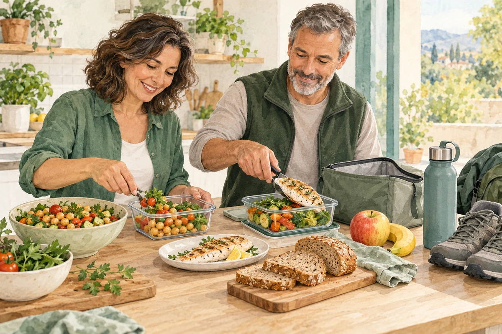
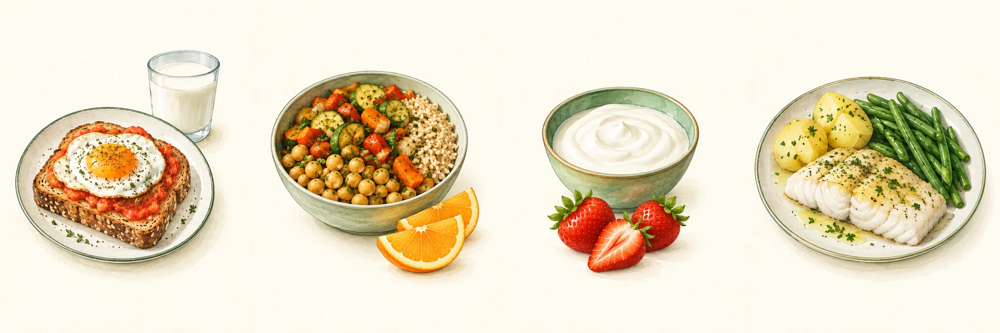

SITUACIONES ESPECIALES
Resistencia a la insulina
Hábitos que ayudan sin dietas extremas.

Lo esencial
La insulina ayuda a que la glucosa de la sangre entre en las células. Cuando responden peor, el cuerpo necesita más insulina para hacer el mismo trabajo. Puede aumentar el riesgo de diabetes tipo 2, pero no significa que ya tengas diabetes. La prediabetes se define por pruebas de glucosa, no solo por insulina alta.
No se diagnostica por un síntoma aislado
Una cifra de insulina, por sí sola, no confirma el diagnóstico. Tu equipo valorará antecedentes y pruebas de glucosa. No necesitas eliminar todos los hidratos ni comprar productos para “activar el metabolismo”.
Qué conviene poner en el plato
| Prioriza | Cómo hacerlo |
|---|---|
| Verduras y fruta entera | Incluye verdura en las comidas y elige fruta en lugar de zumo. |
| Legumbres y cereales integrales | Lentejas, garbanzos, avena, pan y arroz integrales. |
| Proteínas variadas | Pescado, huevos, tofu, lácteos naturales y carnes frescas. |
| Grasas saludables | Aceite de oliva y frutos secos sin sal. |
Con moderación
Refrescos, zumos, bollería, dulces y grandes cantidades de productos refinados. Una etiqueta “sin azúcar” no garantiza calidad: compara también hidratos, grasas, fibra y sal.
No hace falta excluir por sistema
Fruta, patata, pan, arroz y legumbres pueden encajar en cantidades adaptadas. No hay un reparto de nutrientes único que sirva a todos. Las dietas muy restrictivas o los ayunos pueden ser difíciles de mantener y necesitan valorar salud y tratamiento.
Más allá de la comida
| Momento | Ejemplo que puedes adaptar |
|---|---|
| Desayuno | Pan integral con tomate y huevo; o yogur con avena. |
| Comida | Garbanzos con verduras; fruta entera. |
| Cena | Pescado o tofu con verdura y patata o arroz. |
| Bebida habitual | Agua; café o infusión sin añadir azúcar, si te sientan bien. |
• Empieza con el movimiento que puedes hacer y aumenta poco a poco. La meta habitual es al menos 150 minutos semanales de actividad moderada; también cuenta sumar periodos cortos.
• Añade fuerza adaptada, por ejemplo dos días por semana. Si tienes limitaciones, pide ejercicios seguros para tu situación.
• Interrumpe ratos largos sentado: levántate, camina un poco o haz movimiento sentado si no puedes levantarte.
• Organiza dos o tres comidas fáciles para días difíciles. Dormir, reducir el tabaco y pedir apoyo también forman parte del cuidado.
Menú semanal y fuentes
Una semana variada, sin quitar los hidratos. Ajusta cantidades a tus necesidades. Agua y aceite de oliva.

Las imágenes muestran ejemplos del lunes. Sigue los alimentos de la tabla para los otros días.